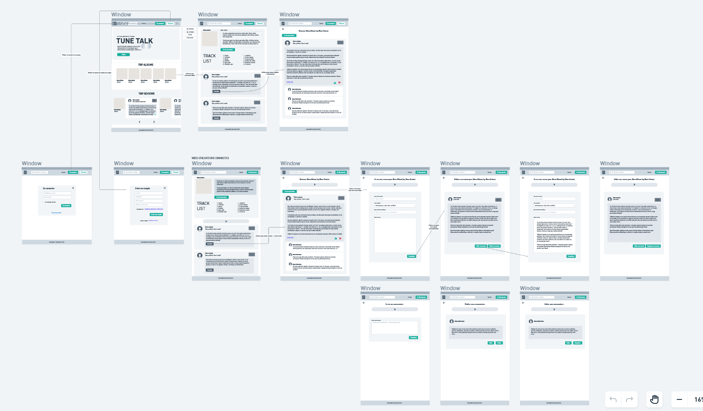
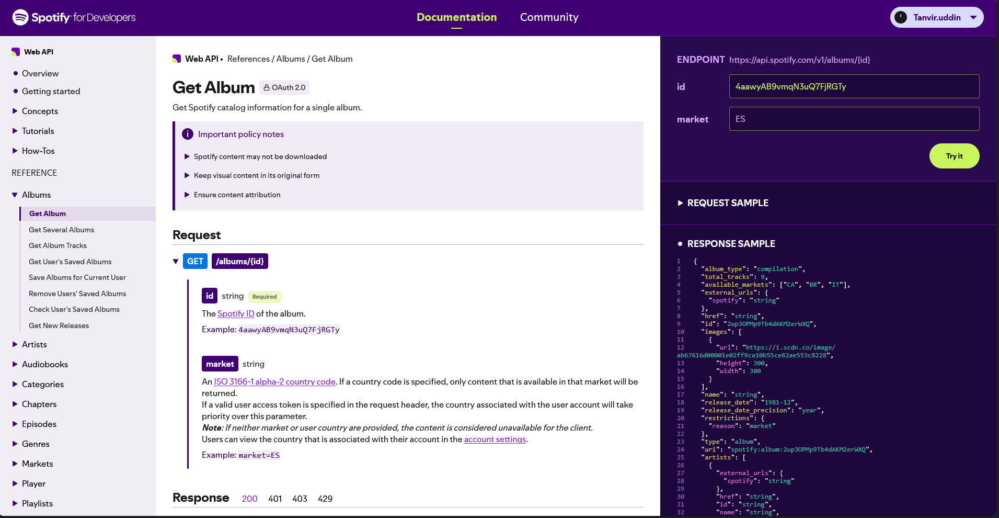
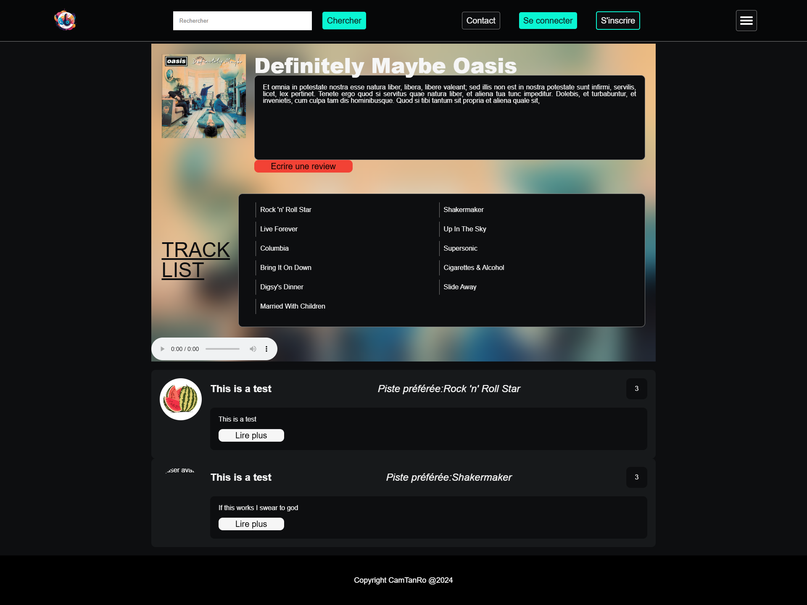

Le défi
Je voulais créer un site de critiques d’albums musicaux, un peu comme IMDB mais pour la musique. L’idée : permettre aux utilisateurs de noter et commenter leurs albums préférés, de consulter ceux des autres, et de découvrir de nouvelles sorties. Le vrai défi ? C’était mon premier projet en équipe. Il fallait non seulement coder, mais aussi communiquer, répartir les tâches, et faire dialoguer nos différentes parties. Ajoutez à ça l’intégration d’une vraie API (Spotify) et une base de données relationnelle à concevoir de zéro… Le terrain était parfait pour apprendre en s’amusant.
Ma solution
Je me suis concentré sur ce que j’aime le plus : le back-end et la gestion des données. Avec PHP 8.2, MySQL et un peu de JavaScript pour l’interactivité, j’ai construit :
- Une page d’inscription / connexion complète
- Un espace profil modifiable
- La récupération des albums depuis l’API Spotify et leur affichage clair
- Une page de détail pour chaque album, avec un formulaire de critique et l’affichage des avis existants
- Un moteur de recherche avec page de résultats
- Un tableau de bord présentant les derniers albums ajoutés
Côté outils, j’ai utilisé VSCode, XAMPP (pour Apache/MySQL local), Insomnia pour tester les API, Whimsical pour les maquettes, et Looping pour modéliser la base de données avec Merise. Même si le projet était en équipe, j’ai pris soin de bien documenter ce que je faisais pour que tout reste propre et réutilisable.
Le résultat
Le projet n’est pas totalement terminé (les commentaires sur les critiques n’ont pas eu le temps d’être implémentés), mais ce n’est pas l’essentiel. Ce qui compte, c’est ce que j’en ai tiré :
- Une première expérience concrète du travail en équipe (avec ses joies et ses galères — on a regretté Teams, par exemple)
- La fierté d’avoir intégré une API externe comme Spotify sans framework
- Une meilleure compréhension de la modélisation de base de données, des tests d’API, et de la structuration d’un projet de A à Z
- Et surtout, beaucoup de plaisir à coder, à bidouiller, et à voir le site prendre vie
Même inachevé, TuneTalk reste pour moi une étape clé : il m’a appris à collaborer, à gérer mes priorités, et à ne pas avoir peur de l’imperfection quand l’objectif est d’apprendre. J’ai hâte de remettre ça sur un prochain projet !



